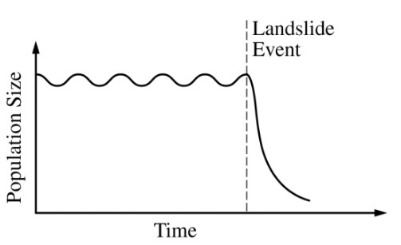

Undersea landslides can disrupt marine habitats
by burying organisms that live on the ocean floor.
The graph above shows the size of a population of
a certain organism that lives on the ocean floor.
The population was affected by a recent landslide
at the time indicated on the graph. Which of the
following best predicts how the population will be
affected by the landslide?
A bottleneck event occured. The population was greatly reduced. It is likely that only a small proportion of the population had traits suitable for the environment after the landslide event.
This reduced population has a different and more specific genetic composition than the original population.
Evolution would require that the bottlenecked population be isolated from the original population.
The population may adapt over time, but it is more likely to diminish over time as indicated by the graph. Evolution and adaptation take time; sudden changes often lead to extinction of a species.